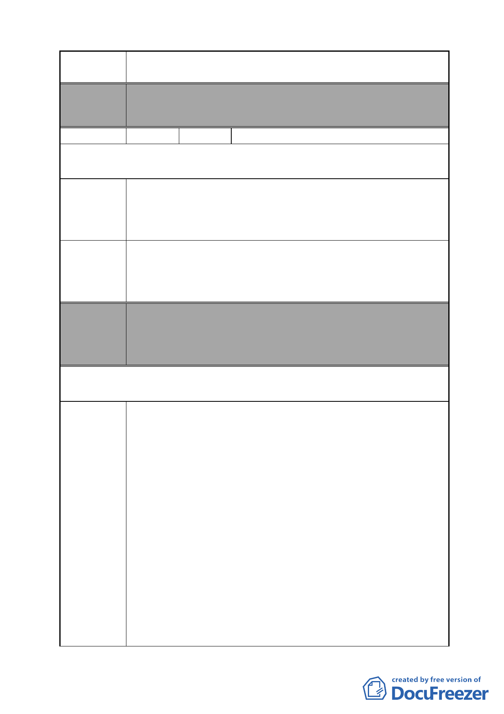

案名
變更臺北市南港區鐵路地下化沿線土地主要計畫案
案辦理都市計畫變更）
編號
51 陳情人 李議員彥秀
第一次意見（97.11.27.）
陳情理由
建議辦法
委員會
決議
本案將多筆私有土地變更為公共設施用地，涉及眾多民眾與
住戶之權益，導致包括世貿財星大樓、南港教會、大華鋼鐵
機械股份有限公司（地號 484、487、505）與民眾、地主竭力
反對該重劃案。
該計畫案涉及南港未來發展，並影響民眾與住戶權益，事關
重大，現今民眾反對聲浪不斷，市府對此案應當以更審慎的
態度妥善處理，廣納地主、民眾與該地住戶意見，並將統整
的意見轉之都市計畫委員會，審慎考量民眾的權益。
本案除文字誤繕應再作修正外，其餘依市府本次會議所送修
正計畫書內容通過。
（依市府本次會議所送修正計畫書，業將陳情地點剔除於市
地重劃範圍）
第二次意見（98.3.11.）
陳情理由
有關 貴會目前正刻審議「變更臺北市南港區鐵路地下化沿線
土地主要計畫案」乙節提出意見如下：
1.台電公司規劃玉成變電所長達 15 年時間，每每遇到居民抗
爭，足見本市市民對於變電所用設置於居家附近都有強烈反
對意見。台電公司原訂於該公司中心倉庫用地設置，經居民
多次抗爭及多次協調台電公司，原擬同意將變電所置現台鐵
調車場回饋之公園用地，並於去年底召開說明會，亦遭遇強
大反對聲浪。台電於此時提出於中心倉庫原址北移變更為變
電所用地，非但心態可議，恐遇更多居民抗爭及阻力，非但
無助於台電公司尋覓變電所用址，更加深居民對於台電公司
的疑慮。
2.事實上，本席於處理本案之始，就多次提醒台電公司應該將
變電所放置於遠離住宅區用地，並且具體建議擇定 202 兵工
廠釋出用地興建，並應積極與國防部溝通，避免延遲時程，
造成用電困難。不料，台電公司非但沒有積極運作，更大玩
兩面手法，一方面召開新址說明會，一方面又向 貴會送案
- 54 -